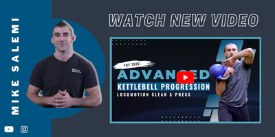

B687 · Advanced single kettlebell movement to build athleticism
Hi {first_name},
One of the many things that I appreciate about working with kettlebells is that when the training is intentional, it has the ability to build crazy levels of athleticism.
It's one of the only tools that, when you commit to training with it regularly, you can become strong AND mobile, muscular AND have high-level endurance... put simply, you can become a balanced warrior.
In today's video breakdown, I teach you a more advanced kettlebell locomotive movement that will transfer into enhancing athleticism. I do suggest going light on the load, and focusing on the details of each progression.
Click here to watch the video below to learn the Locomotive Clean & Press.
 Keep training intentionally, Mike Salemi
P.S. Yesterday was the first session of Kettlebell Lifestyle LIVE. If you love learning new kettlebell techniques, Kettlebell Lifestyle LIVE is for you. The focus is teaching new movements, coaching the technique, and guiding you from warm up to decompressive stretches at the end. It’s a blast and I show progressive levels so there is a place for you whether you are newer to kettlebells or you’ve been training with them for years. Check out the details and sign up.
|